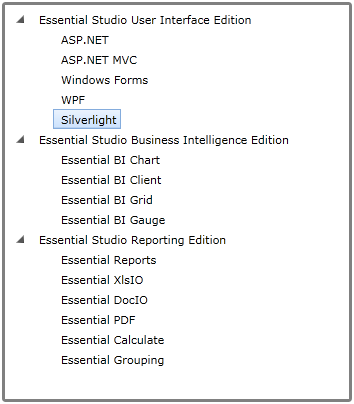
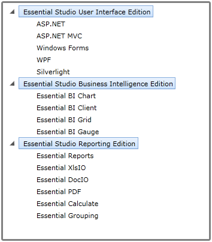
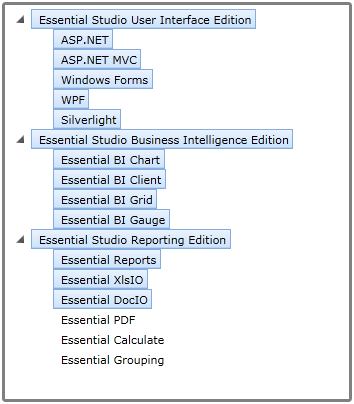

TreeViewAdv supports different selection modes as follows:
· Single Selection – You can select only one node at a time
· MultiSelectSameLevel – You can select only nodes of same level
· MultiSelectAll – You can select multiple nodes
To change the selection behavior of a TreeViewAdv, use the SelectionMode property.
Use Case Scenarios
With MultiSelection support, you can select multiple node at a time.Changing MultiSelection behavior in an Application
Changing MultiSelection behavior in an Application
You can change the selection behavior of TreeViewAdv using SelectionMode property. To change the selection behavior of TreeViewAdv, use SelectionMode property.
The following code illustrates how to select MultiSelectAll mode using SelectionMode property.
|
[XAML]
<syncfusion:TreeViewAdv x:Name="treeview1" Width="350" VerticalAlignment="Stretch" FullRowSelect="False" |

Figure 756: Single SelectionMode

Figure 757: MultiSelectSameLevel

Figure 758: MultiSelectAll
Properties
Table 26: SelectionMode Property Table
|
Property |
Description |
Type |
Data Type |
Reference links |
|
SelectionMode |
Specifies the selection behavior of TreeViewAdv. Single: One node at a time can be selected. MultiSelectSameLevel: Nodes of same level can be selected. MultiSelectAll: Multiple nodes can be selected at a time. |
DependencyProperty |
SelectionMode.Single |
Sample link
A sample application that illustrates MultiSelection support is distributed along with the Essential Tools Silverlight installation and can be found at:
<sample installation location>\Syncfusion\EssentialStudio\Version Number\Silverlight\Syncfusion.Tools.Silverlight.Samples\Samples\TreeView\TreeView Demo\TreeViewDemo.xaml